La transcription du texte a été faite selon les principes suivants :
| 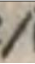 | La barre oblique équivaut à une virgule ou à un point-virgule, tout dépend de sa place dans la phrase. Si on les trouve par deux au sein d’une même phrase, elles peuvent avoir la fonction d’incise (comme les deux points). |
| 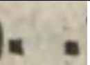 | Ce type de ponctuation sert à aérer le texte lorsque la page est
trop condensée. Nous avons fait le choix de garder un point. 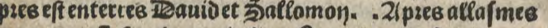 = [l.24] pr[é]s est enterr[é]s David et Sallomon. Apr[é]s allasmes |
| 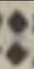 | Dans le texte original, les deux points signalent une virgule. Ils
ont généralement une fonction d’incise. 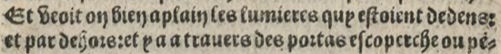 = [l.19] Et veoit on bien a plain les lumieres quy estoient dedens[,] [l.20] et par dehors[,] et y a a travers des portas escoperche ou pen- |
| 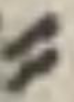 | Ces deux traits superposés ont la fonction de césure, dans notre
version normalisée ils ont été remplacé par un tiret (-) marquant
une césure en français moderne. 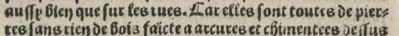 = [l.13] aussy bien que sur les rues[,] car elles sont toutes de pier- [l.14] res sans rien de bois[,] faicte a arcures |
| Lettre présente dans le texte original | Explications | Lettre transcrite dans la version normalisée |
| 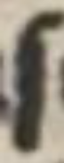 | ſ est un s long se trouvant toujours en début de mot, ou à l’intérieur, mais jamais en fin de mot. | s |
| 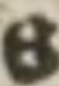 | s rond se trouve à l’intérieur d’un mot ou en fin de mot. Mais jamais en début de mot contrairement au ſ long. | s |
| 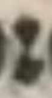 | Le « r de ronde » est une variante de la lettre r. | r |
| 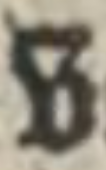 | Variante du v et du u. | v, u |
| 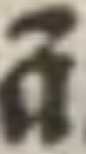 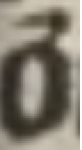 | C'est une abréviation par contraction, le ã (õ) est remplacé par an (on) ou am (om) devant les lettres m, b et p. | an, am ou on, om |
| 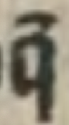 | C'est une abréviation par contraction, le q̃ est remplacé par que, qui, qu' s'il est devant une voyelle. | que, qu’, qui |
| 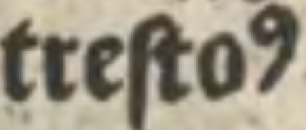 | C'est une abréviation par signe spécial, ici l'exposant 9 signifie us. | us |
| 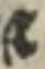 | C'est une abréviation par signe spécial, ici ce signe est similaire à une esperluette et signifie 'et'. | et |
| 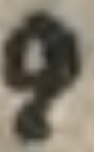 | C'est une abréviation par signe spécial qui signifie con ou com s'il se trouve devant un b, p ou m. | con, com |
| 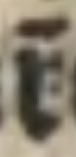 | C'est une abréviation par lettres suscrites. Le r̃ signifie ostr. | ostr |
| 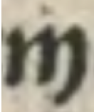 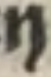 | On retrouve ces deux, à l’origine, en fin de mot dans le manuscrit. Il s’agit d’un jambage terminal. Il permet de ne pas le confondre avec certaines lettres (ex : y, u) | n ou m |